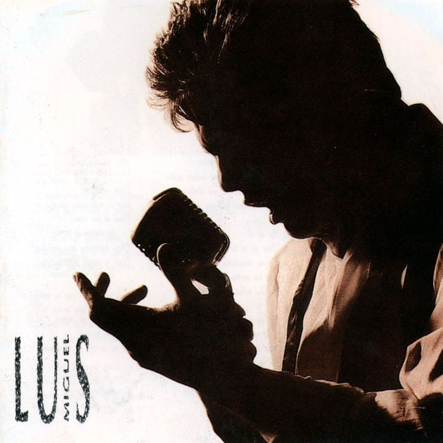

CANCIONERO |
|
Lista de Canciones


|
LA BARCADicen que la distancia es el olvido Pero yo no concibo esa razón Porque yo seguiré siendo el cautivo De los caprichos de tu corazón Supiste esclarecer mis pensamientos Me diste la verdad que yo soñé Ahuyentaste de mí los sufrimientos En la primera noche que te amé Hoy mi playa se viste de amargura, oh Porque tu barca tiene que partir A cruzar otros mares de locura Cuida que no naufrague en tu vivir Cuando la luz del sol se esté apagando y Te sientas cansada de vagar Piensa que yo por ti estaré esperando Hasta que tú decidas regresar Supiste esclarecer mis pensamientos Me diste la verdad que yo soñé Ahuyentaste de mí los sufrimientos En la primera noche que te amé Hoy mi playa se viste de amargura Porque tu barca tiene que partir A cruzar otros mares de locura Cuida que no naufrague en tu vivir Cuando la luz del sol se esté apagando y Te sientas cansada de vagar Piensa que yo por ti estaré esperando Hasta que tú decidas regresar (Hasta que tú decidas regresar) |